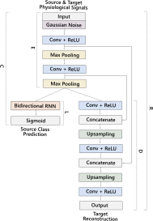
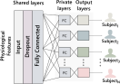

Aaqib Saeed
PhD Candidate @ Eindhoven University of Technology
Self-Supervised Learning, Ambient Computing, Pervasive Sensing & On-device ML.

|
Federated Self-Supervised Learning of Multi-Sensor Representations for Embedded Intelligence
Aaqib Saeed, Flora D. Salim, Tanir Ozcelebi, Johan Lukkien @ IEEE Internet of Things Journal 2020 We present a self-supervised method for learning multi-sensor representations in a federated learning setting from unlabeled and decentralized data. Our scalogram-signal correspondence learning (SSCL) technique utilize wavelet transform and a contrastive objective for training the deep network to determine if a given pair of a signal and its complementary view (i.e., a scalogram generated with wavelet transform) align with each other or not. We extensively assess the quality of learned features with SSCL on diverse public datasets, which comprise signals like electroencephalography, blood volume pulse, accelerometer, and Wi-Fi channel state information. We conduct experiments to demonstrate our approach's effectiveness in both centralized and federated settings through linear classification. Mainly, SSCL significantly improves generalization in the low-data regime by reducing the volume of labeled data required through leveraging self-supervised learning. |
|
Multi-Sensor Data Augmentation for Robust Sensing
Aaqib Saeed, Ye Li, Tanir Ozcelebi, Johan Lukkien @ IEEE COINS 2020 Data augmentation is a crucial technique for improving the generalization of deep models on challenging problems such as object detection and speech recognition. However, its potential is not thoroughly explored for sensory (time-series) data, even though the acquisition of large annotated multi-sensor data is prohibitively expensive and challenging in real-life. In this work, we propose Sensor Augment - a generalized framework for automatically discovering data-specific augmentation strategies from various user-defined transformations using black-box optimization algorithms (such as random search). We show the efficacy of learned augmentation strategies on several complex tasks with performance gains ranging from 1.5 to 10 F-score points over the baseline. |
|
|
On-device Learning of Activity Recognition Networks
Leverage transfer learning for efficiently training activity sensing models directly on the Android device without the need for sending data to the server. Enabling next-generation privacy-preserving personal informatics apps! |
|

|
Multi-Task Self-Supervised Learning for Human Activity Detection
Aaqib Saeed, Tanir Ozcelebi, Johan Lukkien @ IMWUT June 2019- Ubicomp 2019 Workshop Paper@ Self-supervised Learning Workshop ICML 2019 We've created a Transformation Prediction Network, a self-supervised neural network for representation learning from sensory data that does not require access to any form of semantic labels, e.g., activity classes in human context detection. We demonstrate that simple auxiliary tasks of recognizing signal transformations result in strong supervision for extracting high-level features that generalize well on the down-stream task; substantially improving performance under semi-supervised and transfer learning settings in the low-data regime. |

|
End-to-End Multi-Modal Behavioral Context Recognition in a Real-Life Setting
Aaqib Saeed, Stojan Trajanovski, Tanir Ozcelebi, Johan Lukkien @ Fusion 2019 The automatic and unobtrusive sensing of human context can help develop solutions for assisted living, fitness tracking, sleep monitoring, and several other fields. Towards addressing this issue, we develop a multi-modal neural network capable of multi-label behavioral context recognition. Our empirical evaluation suggests that a deep convolutional network trained end-to-end achieves comparable performance to manual feature engineering with minimal effort. |

|
Synthesizing and Reconstructing Missing Sensory Modalities in Behavioral Context Recognition
Aaqib Saeed, Tanir Ozcelebi, Johan Lukkien @ MDPI Sensors 2018 We propose a method based on an adversarial autoencoder for handling missing sensory features and synthesizing realistic samples. We empirically demonstrate the capability of our approach in comparison with classical techniques for filling-in missing values on a large-scale activity recognition dataset collected in-the-wild. |

|
Model Adaptation and Personalization for Physiological Stress Detection
Aaqib Saeed, Tanir Ozcelebi, Johan Lukkien, Jan van Erp and Stojan Trajanovski @ IEEE DSAA 2018 Long-Term exposure to stressful situations can have negative health consequences, such as the increased risk of cardiovascular diseases and immune system disorder. We utilize a deep reconstruction classification network and multitask learning for domain adaption and personalization of stress recognition models. The proposed methods performed significantly better than baselines on multimodal physiological (time-series) data collected during driving tasks, in both real-world and driving simulator. |

|
Personalized Driver Stress Detection with Multi-Task Neural Networks using Physiological Signals
Aaqib Saeed and Stojan Trajanovski @ ML4H Workshop NeurIPS 2017 Stress can be seen as a physiological response to everyday emotional, mental, and physical challenges. We suggest a subjects-as-tasks approach for multi-task learning based neural network (with hard parameter sharing of mutual representation and task-specific layers) for personalized stress detection using skin conductance and heart rate from wearable devices. |

|
Deep Physiological Arousal Detection in a Driving Simulator using Wearable Sensors
Aaqib Saeed, Stojan Trajanovski, Maurice van Keulen and Jan van Erp @ DMBIH Workshop IEEE ICDM 2017 Driving is an activity that requires considerable alertness. Insufficient attention, imperfect perception, inadequate information processing, and sub-optimal arousal are possible causes of poor human performance. Understanding of these causes and the implementation of effective remedies is of crucial importance to increase traffic safety and improve driver's well-being. For this purpose, we develop an arousal detection algorithm using a temporal convolutional neural network. The model is trained on raw physiological signals, i.e., heart rate, skin conductance, and skin temperature. |

|
#WhoAmI in 160 Characters? Classifying Social Identities Based on Twitter
Anna Priante, Djoerd Hiemstra, Tijs van den Broek, Aaqib Saeed, Michel Ehrenhard and Ariana Need @ NLP and CSS Workshop EMNLP 2016 We combine social theory and NLP methods to classify English-speaking Twitter users' online social identity in profile descriptions. Our study shows how social theory can be used to guide NLP methods, and how such methods provide input to revisit traditional social theory that is strongly consolidated in offline settings. |